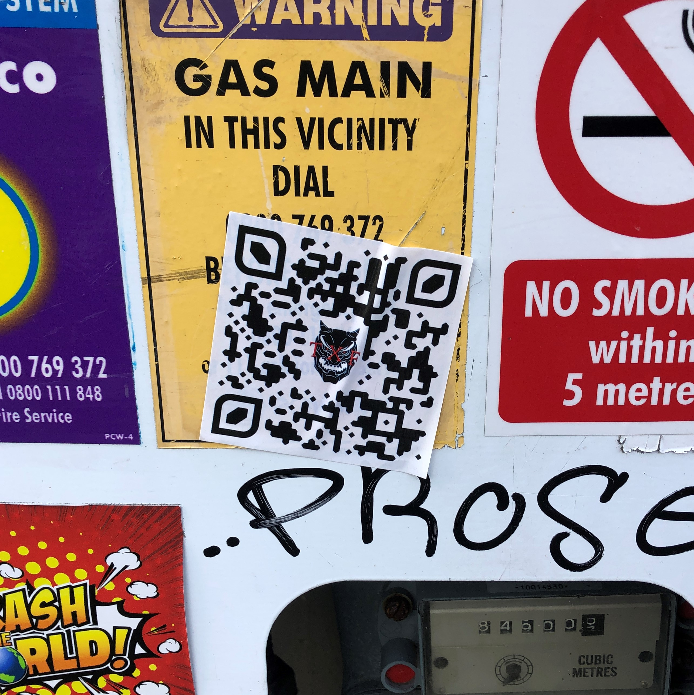
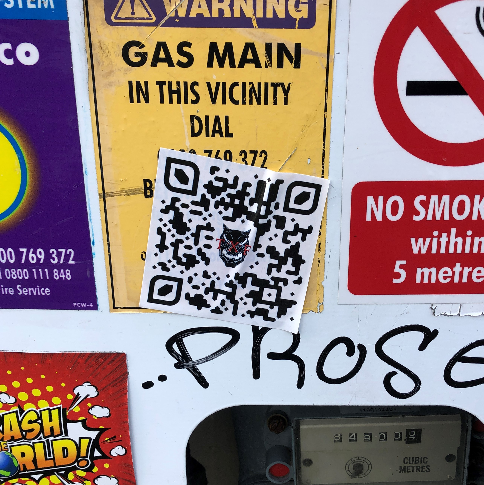
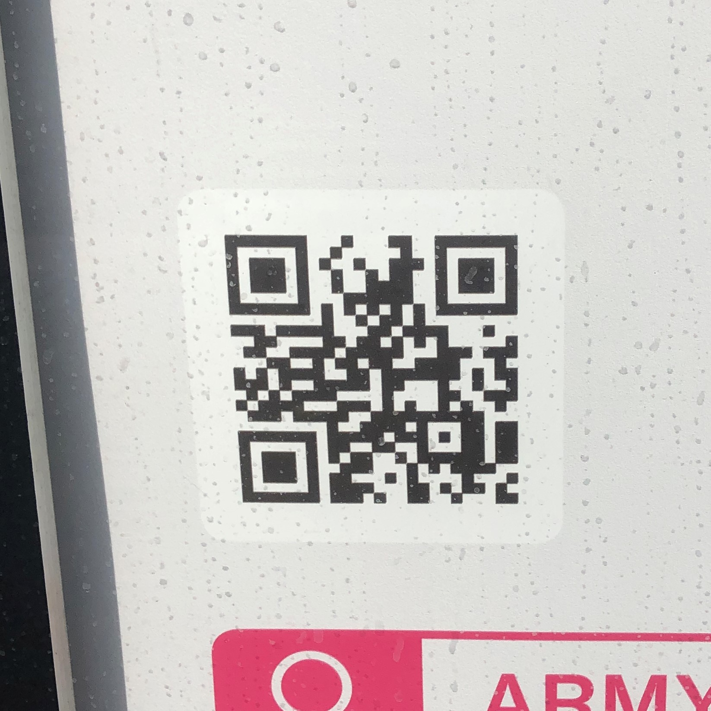
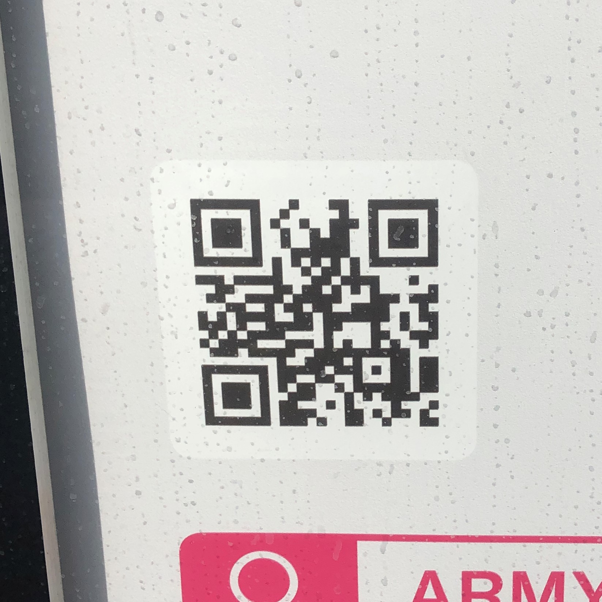

Project overview
The project I am proposing is an interactive digital archive of the QR code stickers in Wellington city. Many groups/individuals scatter QR codes around the city which connects the physical 3D space to the network of the internet.
However, these QR codes are not permanent. Many of them are on posters which are changed frequently, or sticker grafitti which is removed by the council or the weather.
I am proposing a website with a digital map of the city (like google maps) which you can explore and find QR codes that are/were once in the city. They will be on the map where they were found in the city.
Users will be able
to scan their codes with their phone, or simply click on a hyperlinked URL to take them to the website the original QR code lead to.
Target audience
The target audience of this website are most likely people living in Wellington city, as they will be the most interestd in what websites the codes lead to.
More specifically, it will be those who wander around the city and actually encounter these codes on a day to day baisis (students, people who walk to work), and people who browse
the internet a lot who will be the most interested in this site.
Tourists and pepole from around New Zealand may also be interested in exploring the QR codes of Wellington.
Physical research
When walking around the city, I see many QR codes on posters and stickers that lead to a vast variety of web pages, but I know that none of these are permanent.
I began thinking of a way to preserve these codes in a
way that is still expolrable and accessible by the public.
Here is a selection of the codes I encountered on my way to and from university

 

 
